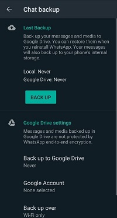
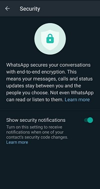
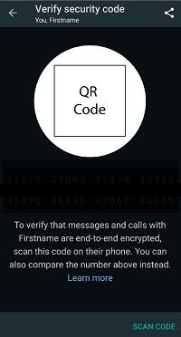
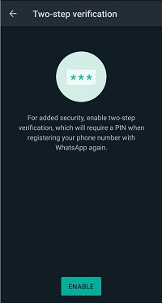

Introduction
Having more than two billion clients, there's a decent possibility you know a many individuals utilizing WhatsApp, a free application for voice calls, video calls, and informing. For certain changes, you can make it substantially more secure for your discussions.
In WhatsApp, discussions are start to finish encoded, implying that nobody aside from the conversational members can peruse the messages. Its encryption is freely perceptible, permitting security experts to look carefully for expected openings. Similarly, in light of the fact that it's so mainstream, you and your contacts may as of now have it on your gadgets. These highlights make WhatsApp a fair choice for getting your discussions.
Nonetheless, there are still some protection and security tradeoffs to consider. WhatsApp is possessed by Facebook, and it shares clients' telephone numbers and investigation information with the organization. Receptive to a substantial legitimate solicitation, courts may force Facebook to share information about your discussions. At long last, a significant number of WhatsApp's security highlights are not enacted as a matter of course, and you'll have to change some security settings to benefit from the application.
So we should discuss how to get WhatsApp, and how to make it as secure as workable for ordinary use.
Getting Started
In the first place, discover WhatsApp for iPhone here, or look for it in the Application Store or Google Play store. At the point when you first dispatch the application, it will request you to acknowledge their terms from use and protection strategy, and will ask you for contact and warning consents. To give authorizations, iPhone clients can click "Alright" while Android clients click "Proceed." Next, it will request to confirm your telephone number.
iPhone clients: Type your telephone number and tap "Done." To affirm the telephone number is right, click "Yes." You will at that point get a SMS instant message with a six-digit affirmation code. Type the code in the application.
Android clients: Type in your telephone number and tap the green bolt to proceed. To affirm the telephone number is right, click "Alright." You will at that point get a SMS instant message with a six-digit affirmation code. Type the code in the application. You can likewise give the application authorization to consequently peruse the SMS code to confirm your telephone number.
From here, you can visit with your contacts who are additionally on WhatsApp. Snap contacts, and discover somebody you need to visit with. (In the event that you attempt to tap on somebody who isn't on WhatsApp, you will have the choice to welcome them to download it.) Snap "Send Message" to start a discussion. You can likewise tap on any of the message, video call, or voice call symbols.
Steps to play with privacy and security
You can change some settings to better control your data.
Make sure cloud backups are off
WhatsApp permits you to make reinforcements of your messages to the cloud. The issue is that they are not gotten when offering to the cloud supplier, which truly sabotages the primary security benefit of the application. Fortunately you can kill this.
iPhone clients: Change your settings inside WhatsApp and your iCloud settings to impair reinforcements. WhatsApp Settings > Chats > Chat Backup > Auto Backup > Off Exit WhatsApp, then navigate to… iPhone Settings > [Your name] > iCloud > Storage > Manage Storage > WhatsApp > Disable
Android clients: Menu (three dots) > Settings > Chats > Chat Backup > Back up to Google Drive > Never
On the off chance that you have effectively sponsored up WhatsApp visits with iCloud or Google Drive, you can erase those as well.
Figure 1 : Backup Settings in Whatsapp
Change your protection settings
Of course, anybody can see when you've last been on the web, your profile photograph, and current status. Consider changing each setting to "My Contacts," so just your contacts can see you. Here's the way you can change your protection settings.
iPhone clients: Settings > Account > Privacy
Android clients: Menu icon (three dots) > Settings > Account > Privacy Change the settings for the time you were most recently seen, your profile photograph, and your status. In the event that you decide, you can likewise change your crowd to "No one," yet it will be more hard for your companions to discover you on the application.
Make messages automatically disappear
Typically when you communicate something specific, it stays on WhatsApp inconclusively, and when somebody erases a message it is just erased on their gadget. In the event that you would like to erase maturing messages in a discussion of course, there's a method to do that.
iPhone clients: Open a conversation > Click your conversation partner’s name at the top of the screen > Disappearing Messages > On
Android clients: Open a conversation > Menu icon (three dots) > View contact > Disappearing Messages > On Messages will be deleted from all devices in conversation after 7 days.
Something strange happen with your encryption? Get notified
Of course, WhatsApp doesn't disclose to you whether your conversational accomplice's encryption keys changed. What's the significance here? On the off chance that the encryption key for a discussion transforms, it could imply that your accomplice got another telephone or reinstalled the application, adequately changing how your messages will be scrambled to them pushing ahead. For all the more high-hazard clients, it could likewise imply that somebody is intentionally meddling with your encryption. You can have WhatsApp advise you when a critical changes in your discussion:
iPhone clients: Settings > Account > Security > Show Security Notifications
Android clients: Menu (Three dots) > Settings > Account > Security > Show Security Notifications Note that the notification will let you know of a key change, but will not prevent your messages from being sent when your partner’s key changes.
Figure 2: Security Notification Setting in Whatsapp
Use session verification
For most messengers, its absolutely impossible to realize that your message isn't caught by an outsider, yet WhatsApp permits you to check that your discussion is secure. Consider confirming your meeting while having delicate discussions.
iPhone clients: View your partner’s contact information by clicking their name at the top. Tap “Encryption.” This will bring up their security code.
Android clients: Click the menu icon (three dots) > View contact > Encryption. This will bring up their security code.
Figure 3: Encryption Setting in Whatsapp
Enable two-step verification to protect your WhatsApp account
At the point when you set up WhatsApp, you probably enrolled your record with your telephone number. However, on the off chance that you at any point lose admittance to this number (e.g., when changing to another telephone administration), whoever controls your telephone number can enroll your number on WhatsApp. Why's this an issue? In the event that another person enrolls your WhatsApp number, presently it's their number and you'll lose access. To guarantee nobody else can re-register the record, you can require future enrollments to require a PIN code. This is now and then called two-venture check.
iPhone clients: Settings > Account > Two-step verification
Android clients: Settings > Account > Two-step verification This PIN will help ensure your record, yet you'll need to recollect it or store it some place safe. This may be a genuinely covered up journal, or secret word the executives programming. To guarantee you actually recall it, WhatsApp will incidentally provoke you to return your PIN.
Figure 4: 2 Factor Authentication Setting in Whatsapp
Security hygiene
Maybe it's a given, yet encryption will not assist with somebody who has actual admittance to your opened telephone. In the event that you haven't done as such, secret key ensure your gadget. Exit WhatsApp and turn on your password.
iPhone clients: Settings app > Face / Touch ID & Passcode
Android clients: users (may be slightly different, depending on your Android version): Settings app > Security > Screen lock
Recall that solid encryption will not assistance if your gadget or your accomplice's gadget is undermined with malware. For instance, a few sorts of malware are intended to send screen captures of your messages to a distant programmer. The best safeguard is to just put in new programming refreshes for WhatsApp and your gadget itself. These updates ordinarily contain significant security patches; get them straightaway. In the event that your telephone is at any point lost or taken, hoodlums can duplicate and peruse information off the gadget, including your encoded messages. Fortunately, it's really simple to ensure your gadget with plate encryption. On the off chance that you utilize an advanced secret word ensured iPhone, your gadget is as of now encoded. Some Android gadgets are encoded of course (e.g., the Pixel line). Android clients ought to guarantee circle encryption is empowered inside their settings.
You're Done!
“There are just two kinds of organizations: Those that have been hacked, and those that is destined to be.”, once, Former FBI Director Robert Mueller quoted.
Be Cautious while using this Digital World!
Stay Safe and Secured.